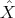

A primal and dual pair of semidefinite programs are
where diag(y) is the diagonal matrix with diagonal entries equal to the components of y. Let

Assume 2c ≥ a ≥ b ≥ c > 0.
- Let Ŝ = C - diag(ŷ). Show Ŝ ≽ 0 by finding a vector v so that Ŝ = vvT .
- Show v = 0. What can you conclude about the determinant of ?
- Show that each of β, γ, and δ are no larger than 1 in absolute value. What can you conclude about the determinants of the principal 2 × 2 submatrices of ?
- Show that bT ŷ = trace(C). What do you conclude?